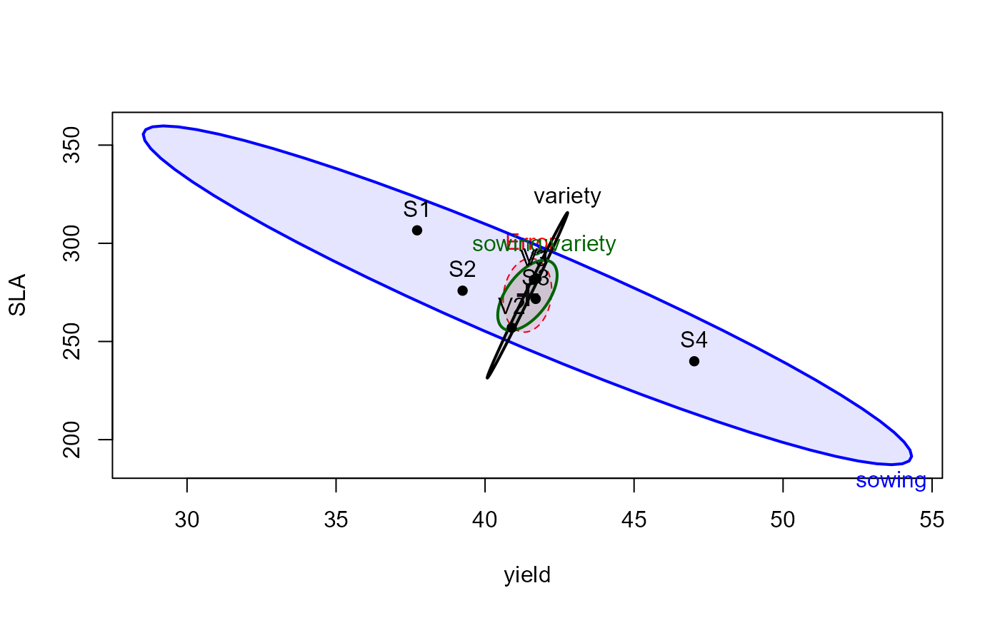
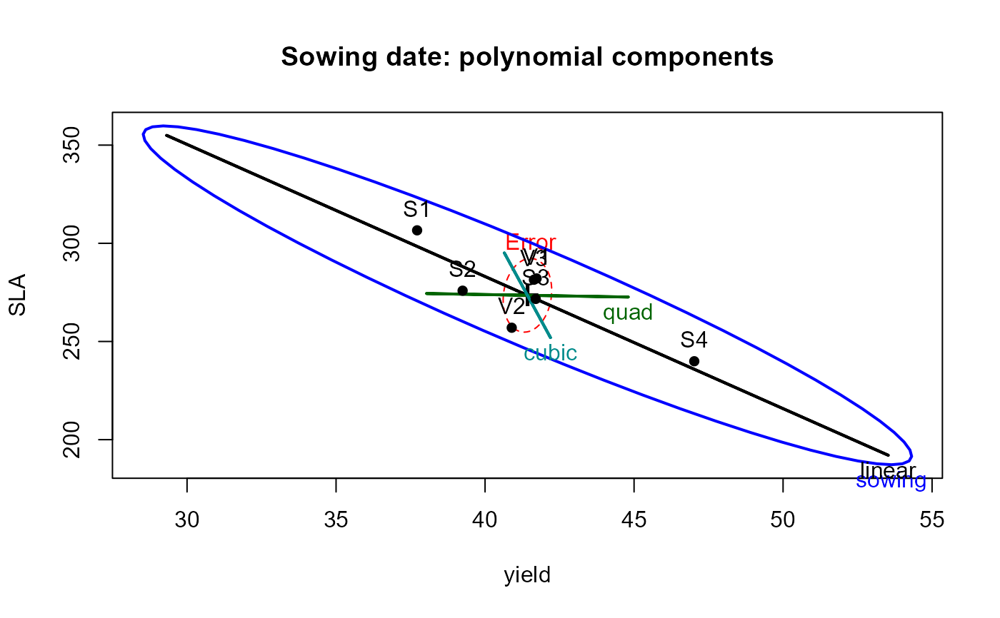
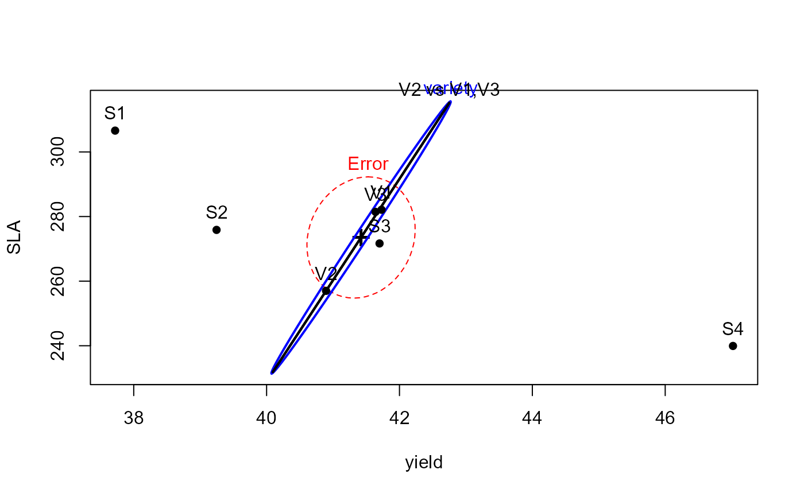
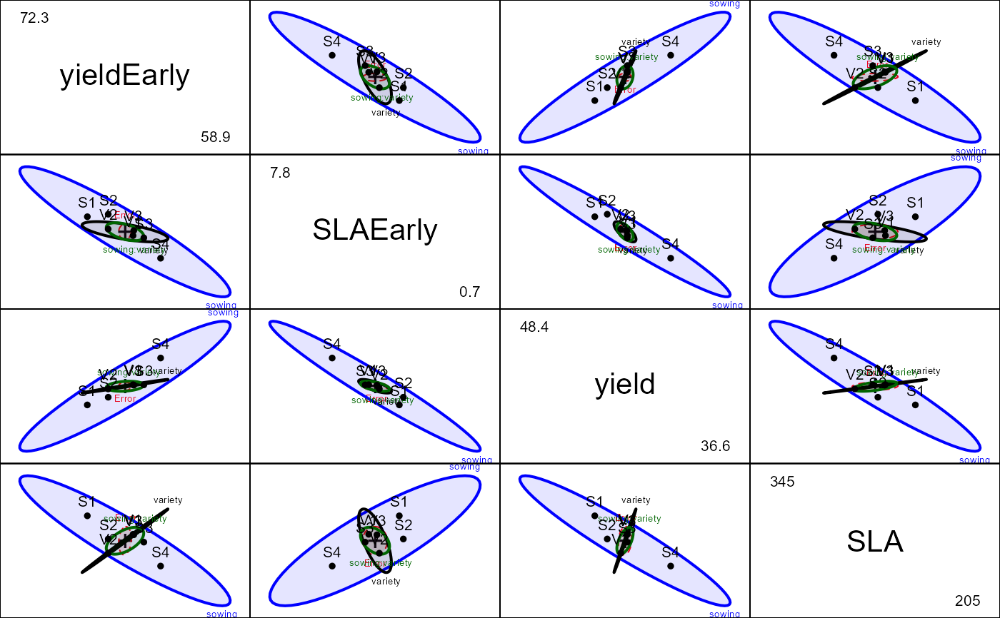
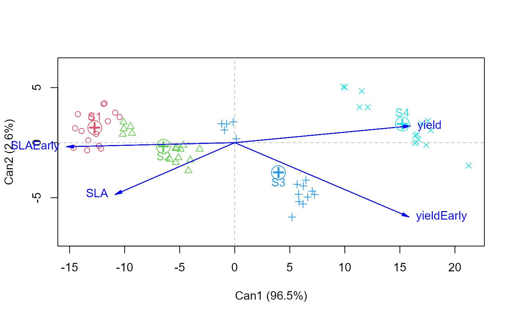

A balanced two-way experiment on snap beans: 3 varieties were each sown on 4 dates, with 5 plots for each combination. Four responses were recorded: the earliness of yield and of specific leaf area (SLA), and their totals or averages over the season.
All three effects, sowing date, variety and their interaction, are large, and they have different ranks (3, 2 and 6 df), so this is a good example of a two-way MANOVA with a real interaction.
Format
A data frame with 60 observations on the following 6 variables.
sowing: sowing date, an ordered factor with levelsS1<S2<S3<S4. The actual dates are not given.variety: a factor with levelsV1,V2,V3yieldEarly: yield earlinessSLAEarly: specific leaf area earlinessyield: total yieldSLA: average specific leaf area
Source
Rencher, A. C. & Christensen, W. F. (2012), Table 6.18, from the
rencher package (table6.18). Originally from Keuls, M., Martakis,
G. F. P., & Magid, A. H. A. (1984). The relationship between pod yield
and specific leaf area in snapbeans; an example of stepwise multivariate
analysis of variance. Scientia Horticulturae, 23, 231–246.
Details
The responses come in pairs: earliness (yieldEarly, SLAEarly) and
season totals (yield, SLA); or yield (yieldEarly, yield) and leaf
area (SLAEarly, SLA).
sowing is an ordered factor, so it has polynomial contrasts
(sowing.L, sowing.Q, sowing.C) for linear, quadratic and cubic
trends over the sowing dates, assuming they are equally spaced.
variety comes with contrasts comparing variety 2 to varieties 1 and 3
(variety2vs13), and variety 1 to variety 3 (variety1vs3). Rencher &
Christensen (2012, Problem 6.28) ask for the first of these because "in
previous experiments, the second variety gave higher yields". In these
data, variety 2 has the lowest mean total yield, although the contrast is
highly significant.
References
Rencher, A. C. & Christensen, W. F. (2012). Methods of Multivariate Analysis, 3rd ed. Hoboken, NJ: Wiley. Problems 6.28, 7.27.
Examples
data(SnapBeans)
with(SnapBeans, table(sowing, variety))
#> variety
#> sowing V1 V2 V3
#> S1 5 5 5
#> S2 5 5 5
#> S3 5 5 5
#> S4 5 5 5
contrasts(SnapBeans$variety)
#> 2vs13 1vs3
#> V1 -1 1
#> V2 2 0
#> V3 -1 -1
beans.mod <- lm(cbind(yieldEarly, SLAEarly, yield, SLA) ~ sowing * variety,
data = SnapBeans)
car::Anova(beans.mod)
#>
#> Type II MANOVA Tests: Pillai test statistic
#> Df test stat approx F num Df den Df Pr(>F)
#> sowing 3 2.3594 43.280 12 141 < 2.2e-16 ***
#> variety 2 1.1036 14.157 8 92 3.032e-13 ***
#> sowing:variety 6 1.3338 4.002 24 192 2.757e-08 ***
#> ---
#> Signif. codes: 0 '***' 0.001 '**' 0.01 '*' 0.05 '.' 0.1 ' ' 1
heplot(beans.mod, variables = c("yield", "SLA"),
fill = TRUE, fill.alpha = 0.1)

# polynomial trends over sowing dates
hyp <- list("linear" = "sowing.L", "quad" = "sowing.Q", "cubic" = "sowing.C")
heplot(beans.mod, terms = "sowing", hypotheses = hyp,
variables = c("yield", "SLA"),
main = "Sowing date: polynomial components")

# variety 2 vs varieties 1 and 3
car::linearHypothesis(beans.mod, "variety2vs13") |> print(SSP = FALSE)
#>
#> Multivariate Tests:
#> Df test stat approx F num Df den Df Pr(>F)
#> Pillai 1 0.919646 128.7549 4 45 < 2.22e-16 ***
#> Wilks 1 0.080354 128.7549 4 45 < 2.22e-16 ***
#> Hotelling-Lawley 1 11.444879 128.7549 4 45 < 2.22e-16 ***
#> Roy 1 11.444879 128.7549 4 45 < 2.22e-16 ***
#> ---
#> Signif. codes: 0 '***' 0.001 '**' 0.01 '*' 0.05 '.' 0.1 ' ' 1
heplot(beans.mod, terms = "variety",
hypotheses = list("V2 vs V1,V3" = "variety2vs13"),
variables = c("yield", "SLA"))

aggregate(cbind(yield, SLA) ~ variety, data = SnapBeans, FUN = mean)
#> variety yield SLA
#> 1 V1 41.730 282.10
#> 2 V2 40.895 257.00
#> 3 V3 41.640 281.45
pairs(beans.mod, fill = TRUE, fill.alpha = 0.1)

# sowing date is essentially one-dimensional in canonical space
if (requireNamespace("candisc", quietly = TRUE)) {
beans.can <- candisc::candisc(beans.mod, term = "sowing")
print(beans.can)
plot(beans.can)
}
#>
#> Canonical Discriminant Analysis for sowing:
#>
#> CanRsq Eigenvalue Difference Percent Cumulative
#> 1 0.99295 140.9428 137.13 96.46565 96.466
#> 2 0.79235 3.8157 137.13 2.61159 99.077
#> 3 0.57414 1.3482 137.13 0.92276 100.000
#>
#> Test of H0: The canonical correlations in the
#> current row and all that follow are zero
#>
#> LR test stat approx F numDF denDF Pr(> F)
#> 1 0.00062 178.89 12 140.52 < 2.2e-16 ***
#> 2 0.08843 42.53 6 108.00 < 2.2e-16 ***
#> 3 0.42586 NaN 2 NaN NaN
#> ---
#> Signif. codes: 0 '***' 0.001 '**' 0.01 '*' 0.05 '.' 0.1 ' ' 1
#> Vector scale factor set to 16.464
